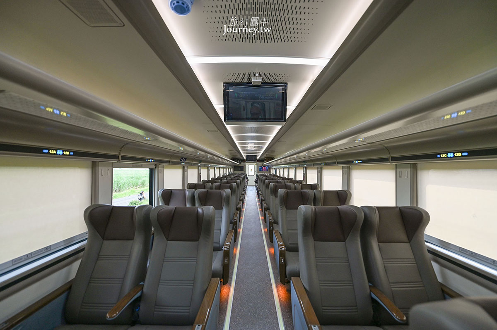

Journey Overview
一趟完整、舒服、而且很會安排情緒節奏的印尼經典路線
前段用峇里島放鬆，中段用火山與瀑布拉高記憶點，最後在日惹用文化與城市質感收尾，是非常適合做成旅遊手冊的一條線。
Trip Snapshot
旅程摘要
先看這一頁，就會知道哪些天要早起、哪些天是火山健行日、哪些天適合把步調放慢。
Journey Highlights
整趟旅程最值得期待的段落
不是每天都要塞滿，而是把真正有畫面的地方留在對的位置，讓旅程一步一步往上堆。
Day-by-Day Preview
每日故事卡
先看每一天的主題、體力節奏和最值得期待的畫面，再進入詳細行程，會更容易抓到整趟旅行的節奏。
Practical Info
旅途中會一直翻的實用資訊
這裡把航班、住宿、火山健行、穿搭、補給和腸胃提醒收成好翻的手冊頁，而不是堆成資料庫。
Stay Plan
住宿安排
每一段住宿都對應不同節奏：度假、冒險後休息、文化城市收尾。每個飯店都附上 Google Maps 連結。
Official Links
官方連結整理
把飯店、火山 tour、機場鐵路與入境網站集中在同一頁，出發前會很好找。
Practical Info
印尼實用資訊
把出發前真的會用到的事情整理在一起：入境順序、換匯概念、App、時差、交通習慣和旅途提醒。
旅途中提醒
Cost Notes
目前已知花費與代墊紀錄
先把 Google 文件裡已寫下來的費用整理成一頁，後續只要補餐飲、計程車和伴手禮就會很完整。
Flight & Route
航班與移動路線
把航段、行李與整體動線獨立整理，出發前和回程前都比較好快速核對。
去程
台北飛峇里島
回程
日惹經雅加達回台北
Trip Flow
Taipei → Bali → Ijen → Sewu → Bromo → Malang → Yogyakarta
Day by Day
每日行程
點開每一天就可以直接看重點，做成比較接近旅遊手冊的閱讀方式。
Train Chapter
火車移動
把 Day 7 的移動獨立成一頁，整理成比較像鐵道手冊的閱讀方式：列車定位、最高等級個人間、購票方式與參考連結都放在一起。
Argo Semeru 列車外觀
Photo via Journey.tw

Compartment Suites 個人間
Photo via Journey.tw
如何買票
如果你想把 Day 7 做得更舒服，這一段可以直接瞄準最高等級艙位。以下整理以 Journey.tw 文章內容為主。
Curated Tours
包套旅遊團
把這趟旅程裡會用到的包套團獨立整理：已訂的火山團，以及計畫要訂的神廟一日團，讓你之後查連結和確認內容更快。
Travel Map
地圖總覽
可以直接切換主要地點的大圖地圖，也有一鍵打開完整 Google Maps 路線的連結。
Daily Routes
Budget Overview
預算整理
以下印尼盾換算以 NT$1 ≈ Rp531 粗估，方便旅行規劃，不代表即時換匯價格。
| 狀態 | 項目 | 說明 | 金額 |
|---|
匯率參考：NT$1 ≈ Rp531
Visa & Entry
簽證與入境提醒
先申請 eVisa，再補 Bali 旅遊稅，最後把 QR code 與付款憑證留在手機裡，現場會輕鬆很多。